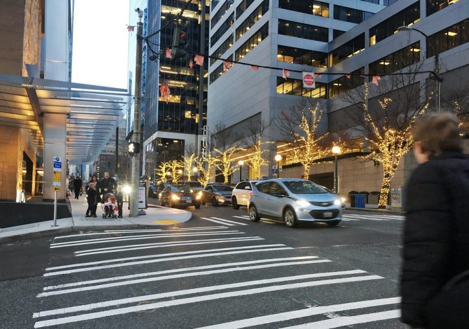

Conclusion
It is always good to know what the state of the transportation is like your surroundings. UW has a fairly good amount of APS and traffic cameras to assist public safety. Most importantly, the Seattle Open Data Portal is a resourseful tool to find important data about Seattle. It is accessible by anyone, anywhere, anytime!
